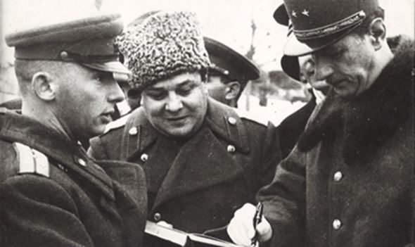

Le voyage de Charles de Gaulle à Moscou est l’un des actes fondateurs qui permet à la France d’occuper une réelle place aux côtés des vainqueurs en 1945. Bien que le déroulement du séjour soit particulièrement intéressant, on s’attachera plutôt à en montrer les tenants et les aboutissants afin de répondre aux questions suivantes : Pourquoi ce séjour est-il si important ? Quels en sont les moments importants ? Quel en est le résultat pour la France ?
Lorsque le 24 novembre 1944 Charles de Gaulle et sa délégation, composée notamment de Georges Bidault, du général Juin, de Gaston Palewski et de Jean Laloy s’envolent pour Moscou, ce voyage diplomatique est d’ores et déjà l’aboutissement d’une idée très claire de la part de Charles De Gaulle et de son gouvernement : donner à la France l’image d’une grande puissance. En cette fin d’année 1944, la victoire est déjà assurée pour les alliés : sur le front Ouest les anglo-américains progressent déjà en Belgique et aux Pays-Bas, tandis qu’à Est les russes sont aux portes de la Hongrie qui reste le dernier allié d’Hitler (pour une question de ressources en pétrole notamment). Cependant l’avance des Russes est bien plus rapide que celle des anglo-américains, il faut donc pour De Gaulle s’affirmer aux côtés de cette superpuissance dont il devine que l’avis comptera auprès des anglo-saxons qui apparaissent, sinon hostiles, du moins réservés à faire véritablement entrer la France dans le camp des vainqueurs.
Etant donné que la France était libérée, et que le gouvernement légitime habite à nouveau Paris, il faut pour De Gaulle opérer une politique diplomatique qui convient mieux à l’image d’un pays fort et victorieux. Alexandre Bogomolov, alors ambassadeur de l’URSS en France fait la proposition d’une visite en Russie, acceptée par De Gaulle, qui a l’idée de réaffirmer l’entente franco-russe et le évoque projet d’un traité franco-russe.
Dans un discours du 22 novembre 1944, Charles De Gaulle annonce donc à l’assemblée les objectifs de ce voyage, assemblée qui est favorable à celui-ci, bien que son point de vue et celui de De Gaulle diffèrent : pour celui-ci il s’agit de répondre à des problématiques concrètes : sécurité, frontières, équilibre des forces, alors que l’Assemblée voit simplement un geste à l’égard d’un allié.
De Gaulle s’envole donc avec sa délégation ce 24 novembre pour Moscou. En plus de cette volonté de redonner à la France un rôle décisionnaire parmi les grandes puissances, les revendications sur l’Allemagne, annoncées quelques temps plus tôt par voie de presse sont : pas de Reich unifié, pas d'État allemand centralisé et le souhait d'associer à la France la Sarre et la Rhénanie.
Après plusieurs haltes, notamment en Egypte, en Iran (qui donnent toutes deux l’occasion de s’entretenir avec le roi Farouk et le Shah de Téhéran) et à Bakou, le Général et sa délégation prennent un train spécial et, à la demande même du général, passe par Stalingrad, lieu d’une bataille décisive de la guerre. Le train arrive à Moscou le 2 décembre et le général choisit de loger à l’Ambassade de France.
Le premier entretien avec Staline a lieu le soir même. De Gaulle en fait la description suivante (qui parait lourde de sens au vu du déroulement des négociations) : « Staline était possédé de la volonté de puissance. Rompu par une vie de complots à masquer ses traits et son âme, à se passer d’illusions, de pitié, de sincérité, à voir en chaque homme un obstacle ou un danger, tout chez lui était manœuvre, méfiance et obstination. » Dès le premier soir, l’éventualité d’un traité est évoquée et acceptée de facto par les deux pays, cependant il convient encore d’en discuter les termes. Ce traité doit être solide car tous avaient en mémoire le pacte de 1935 et son échec, De Gaulle ajoute à ce sujet une phrase révélatrice : « Pour ce qui est de moi, je ne suis pas Pierre Laval ».
 Moscou : le général de Gaulle visite l'exposition des trophées de guerre et signe le livre d'orIl y eu plusieurs moments essentiels à cette négociation. Tout d’abord, la question de la partition de l’Allemagne et des revendications territoriales de la France est balayée par Staline, car selon lui la décision doit être prise en concertation avec les anglo-saxons. La question centrale chez les Russes est véritablement la question polonaise.
De Gaulle écrit à propos de Staline : « À l'entendre, grondant, mordant, éloquent, on sentait que l'affaire polonaise était l'objet principal de sa passion et le centre de sa politique ».
Molotov, le ministre des affaires étrangères soviétique, suggère que la France envoi un représentant officiel au Comité de Lublin, gouvernement polonais sous influence russe. Moscou lie cette clause à la signature d’un traité franco-soviétique. Cependant celle-ci qui est refusée net par De Gaulle qui juge le Comité de Lublin illégitime et rappelle sa volonté d’une Pologne indépendante. A la suite d’un entretien le 6 décembre avec Staline la France ne cède pas sur la question de la Pologne, toutefois elle accepte l’idée d’envoyer un représentant à Lublin, qui ne serait cependant pas un « officiel » (les termes sont ici fortement sujets à interprétation et on comprend bien la manœuvre habile de la délégation française qui sait l’importance de la signature de ce traité).
Le 30 novembre 1944, le général de Gaulle visite Stalingrad
Un autre rebondissement intervient cependant le jour même : Churchill adresse à Staline un télégramme dans lequel il propose un pacte triparti entre l’Angleterre, le France et la Russie. Si les Russes sont disposés à accepter cette idée, De Gaulle n’est pas de cet avis pour diverses raisons : cette proposition n’a pas été officiellement soumise à la France, la mise en place des actions serait encore plus complexe, enfin il doit régler certaines questions avec Londres en particulier (occupation de Rhin, politique en Orient etc.). Staline comprend parfaitement que ce pacte n’est pas dans l’intérêt de la France et profite donc de cette proposition pour presser les Français d’accéder à ses demandes : il accepte de renoncer à ce pacte si la France reconnait le régime de Lublin. Les discussions n’avancent donc pas plus et au soir du 8 décembre le traité n’est toujours pas signé.
Le 9 décembre 1944, le général de Gaulle remet la légion d'honneur au général russe Lavine. Au second plan, le lieutenants Albert, de La Poype et Risso du régiment Normandie-Niemen qui viennent d'être fait compagnons de la Libération.
Le 9 décembre, les Russes se font plus pressant, ils vont même jusqu’à proposer à la délégation française un texte officiel dans lequel Paris reconnait officiellement le Comité de Lublin. C’est ici que De Gaulle prend une décision essentielle : malgré son désir, et par-delà son besoin de signer ce traité, besoin que les soviétiques ont parfaitement mis à jour, il choisit de rester sur sa position. Il reçoit également, dans l’après-midi du 9, plusieurs membres du Comité de Lublin à qui il réaffirme son refus d’envoyer un représentant officiel pour toute autre question que le sort des prisonniers français. Durant la journée, le Général passe également en revue des membres du régiment « Normandie-Niemen », symbole de la coopération franco-russe, non sans une certaine émotion. Tout se décidera donc lors du diner officiel d’adieu. Durant celui-ci Staline opère une véritable « scène de tragi-comédie » (selon les mots du général) mêlant éloges, humour et menaces. Jean Lamoy, alors traducteur du général, résume la scène ainsi : « On dirait un vieux capitaine, entouré de jeunes gens fringants, dévoués et joyeux avec lesquels il se complaît. Un vieux capitaine…et aussi le grand-prince attablé avec sa druzina dans Kiev, la mère des villes russes. Il y a dans tout cela une verdeur, une âpreté étranges. De sincérité, d’élan, de passion révolutionnaire, aucune trace. » Le chef russe teste De Gaulle, teste la détermination de la France en cherchant à impressionner sa délégation. Après ce repas, les négociations se poursuivent dans un salon proche, où De Gaulle, qui remarque que rien n’avance, fait savoir qu’il retourne à l’ambassade de France, acte magistral qui scelle par avance la rédaction du traité.
Les Russes sont stupéfaits de cette décision et au lendemain, le 10 décembre à deux heures du matin ils font savoir qu’ils acceptent la proposition française. Les russes acceptent également que la France ne publie seulement que le 28 décembre le communiqué sur l’arrivée du représentant français à Varsovie et de son équivalent à Paris. A cinq heures du matin le traité est signé et Staline salue l’opiniâtreté du général : « La France a des chefs maintenant, des chefs intraitables, raides, ne cédant pas. C’est bien, c’est bien, c’est ce qu’il faut. J’en suis heureux. C’est ce qu’il faut à la France… ».
La signature du traité franco-russe le 10 décembre 1944, avec notamment Molotov et Staline au centre et Charles de Gaulle à droite
Charles de Gaulle avec Bidault, Laloy, Palewski et Juin
Quel bilan tirer de ce voyage en Russie ? Il est évident que la France a obtenu ce qu’elle était venue chercher. Partout les jugements sont favorables à la signature du traité franco-russe, le public comme le monde politique. La France devient donc l’allié de la grande URSS, ce qui lui assure un soutien de poids sur la scène internationale notamment face aux Etats-Unis et l’Angleterre. Par rapport aux moyens dont il dispose, il faut rappeler que la France sort d’une terrible défaite en 1940 et qu’elle est en pleine reconstruction, le général De Gaulle vient donc de réussir un véritable coup de maître diplomatique. De plus c’est l’occasion pour lui de donner une politique extérieure propre à la France, en dehors de l’influence des alliés occidentaux, et capable de tenir tête à la Russie. A court terme ce voyage participe donc à offrir en 1945 une place à la France à la signature de la paix le 8 mai 1945. Cependant à plus long terme encore, il permet d’entrevoir la politique qui sera celle de De Gaulle face à l’URSS dans une volonté de se détacher de la vision américaine durant la Guerre Froide. La visite de 1966 du général en tant que président de la république est donc un écho évident à cette première visite de 1944.
J.-C. B.
Eléments bibliographiques et sources des images :
DE GAULLE, Charles, Mémoires de guerre Le salut : 1944-1946, Paris, Pocket, 2010, 630 p.
LALOY, Jean, « A Moscou : entre Stalin et De Gaulle, décembre 1944 », Revue des études slaves, Vol. 54, 1982, pp. 137-152
LEVEQUE, François, « De Gaulle à Moscou-décembre 1944 », Espoir, N. 99, 1994
Partager cette page